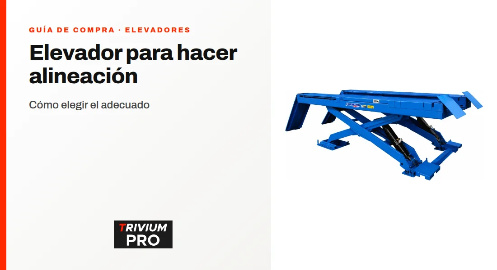

La alineación de un vehículo es un procedimiento esencial en cualquier taller automotriz, y para realizarlo correctamente, es crucial contar con un elevador adecuado. Elegir el equipo correcto no solo mejora la precisión del trabajo, sino que también aumenta la eficiencia y seguridad del operario. A continuación, te explicamos los factores clave que debes considerar al seleccionar un elevador para alineación.
1. Tipo de Elevador
Existen diferentes tipos de elevadores, pero no todos son adecuados para trabajos de alineación. Los más recomendados son:
- Elevador de cuatro columnas: Es el más utilizado para alineación debido a su estabilidad y capacidad de carga. Permite que las ruedas descansen sobre plataformas, facilitando la lectura precisa de los ángulos de alineación.
- Elevador de tijera para alineación: Proporciona una estructura compacta y permite un acceso sin columnas, lo que facilita ciertos procedimientos de ajuste.
- Elevador de dos columnas con accesorios para alineación: Aunque menos común, algunos modelos incluyen plataformas auxiliares para adaptar el proceso de alineación.
2. Capacidad de Carga
El peso que puede soportar el elevador es un factor crucial. Debes elegir un modelo que se adapte a los tipos de vehículos que atenderás en tu taller. En general:
- Para autos y SUVs livianos, un elevador con una capacidad de 4 toneladas es suficiente.
- Para camionetas y vehículos más pesados, considera modelos de 5 toneladas o más.
3. Dimensiones y Espacio Disponible
Antes de adquirir un elevador, mide el espacio disponible en tu taller. Considera el ancho, alto y largo requeridos por el equipo, asegurándote de que haya suficiente espacio para maniobrar alrededor del vehículo y operar la herramienta de alineación con comodidad.
4. Compatibilidad con Equipos de Alineación
El elevador debe ser compatible con los sensores, platos giratorios y plataformas deslizantes necesarios para la alineación. Muchos elevadores para alineación ya vienen con estos accesorios integrados, pero si planeas agregar equipos por separado, verifica la compatibilidad.
5. Seguridad y Certificaciones
Elige un elevador que cumpla con normativas de seguridad internacionales. Busca certificaciones como CE (Comunidad Europea) o ANSI/ALI (American National Standards Institute/Automotive Lift Institute), que garantizan la seguridad y calidad del equipo.
6. Facilidad de Uso y Mantenimiento
Opta por un elevador que sea fácil de operar y que tenga un mantenimiento sencillo. Revisa que disponga de sistemas de lubricación automática, controles intuitivos y acceso fácil a piezas de repuesto.
7. Costo y Relación Calidad-Precio
El presupuesto es un factor clave, pero no sacrifiques calidad por precio. Un elevador barato puede generar costos adicionales en reparaciones y afectar la calidad de la alineación. Evalúa las opciones disponibles y busca un equilibrio entre precio, durabilidad y funcionalidades.
Conclusión
Elegir el elevador adecuado para alineación es una decisión clave para cualquier taller automotriz. Considera el tipo de elevador, la capacidad de carga, el espacio disponible, la compatibilidad con equipos de alineación, la seguridad, la facilidad de uso y el costo antes de tomar una decisión. Una buena elección no solo mejorará la eficiencia del taller, sino también la precisión y calidad del servicio de alineación que ofreces a tus clientes.